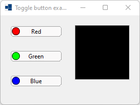
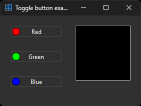
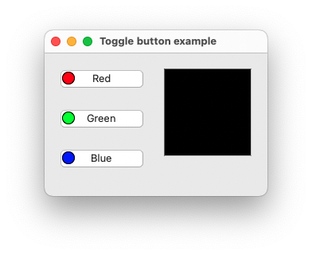
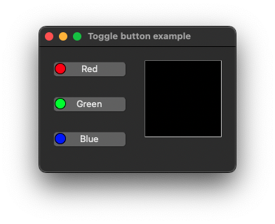
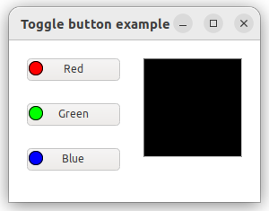
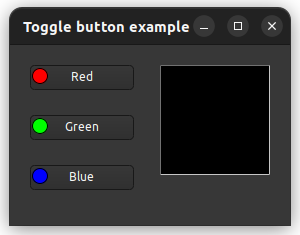

|
xtd
0.2.0
|
Loading...
Searching...
No Matches
toggle_button2.cpp
demonstrates the use of xtd::forms::check_box control.
- Windows
- 

- macOS
- 

- Gnome
- 

#include <xtd/drawing/pens>
#include <xtd/forms/application>
#include <xtd/forms/form>
#include <xtd/forms/label>
#include <xtd/forms/toggle_button>
using namespace xtd;
using namespace xtd::drawing;
using namespace xtd::forms;
public:
form1() {
client_size({280, 180});
controls().push_back_range({button_red, button_green, button_blue, panel_color});
text("Toggle button example");
button_red.location({20, 20});
button_red.image(image_from_color(color::red));
button_red.image_align(content_alignment::middle_left);
button_red.text("Red");
button_red.three_state(true);
button_red.check_state_changed += event_handler(*this, &form1::update_color);
button_green.location({20, 70});
button_green.image(image_from_color(color::lime));
button_green.image_align(content_alignment::middle_left);
button_green.text("Green");
button_green.three_state(true);
button_green.check_state_changed += event_handler(*this, &form1::update_color);
button_blue.location({20, 120});
button_blue.image(image_from_color(color::blue));
button_blue.image_align(content_alignment::middle_left);
button_blue.text("Blue");
button_blue.three_state(true);
button_blue.check_state_changed += event_handler(*this, &form1::update_color);
panel_color.border_style(forms::border_style::fixed_3d);
panel_color.location({150, 20});
panel_color.size({110, 110});
update_color(*this, event_args::empty);
}
private:
static auto color_levels = std::map<check_state, unsigned char> {{check_state::unchecked, 0_u8}, {check_state::checked, 255_u8}, {check_state::indeterminate, 128_u8}};
panel_color.back_color(color::from_argb(color_levels[button_red.check_state()], color_levels[button_green.check_state()], color_levels[button_blue.check_state()]));
}
auto g = graphics::from_image(colored_bitmap);
g.draw_ellipse(pens::black(), 0, 0, colored_bitmap.width() - 1, colored_bitmap.height() - 1);
return colored_bitmap;
}
toggle_button button_red;
toggle_button button_green;
toggle_button button_blue;
panel panel_color;
};
auto main()->int {
application::run(form1 {});
}
Encapsulates a GDI+ bitmap, which consists of the pixel data for a graphics image and its attributes....
Definition bitmap.h:26
An abstract base class that provides functionality for the bitmap and metafile descended classes.
Definition image.h:49
Defines a xtd::drawing::brush of a single color. Brushes are used to fill graphics shapes,...
Definition solid_brush.h:30
Represents the base class for classes that contain event data, and provides a value to use for events...
Definition event_args.h:18
Represents a window or dialog box that makes up an application's user interface.
Definition form.h:52
generic_event_handler<> event_handler
Represents the method that will handle an event that has no event data.
Definition event_handler.h:32
The xtd::drawing namespace provides access to GDI+ basic graphics functionality. More advanced functi...
Definition actions_system_images.h:11
The xtd::forms namespace contains classes for creating Windows-based applications that take full adva...
Definition xtd_about_box.h:12
The xtd namespace contains all fundamental classes to access Hardware, Os, System,...
Definition xtd_about_box.h:10
Generated on Fri Apr 5 2024 22:03:12 for xtd by Gammasoft. All rights reserved.